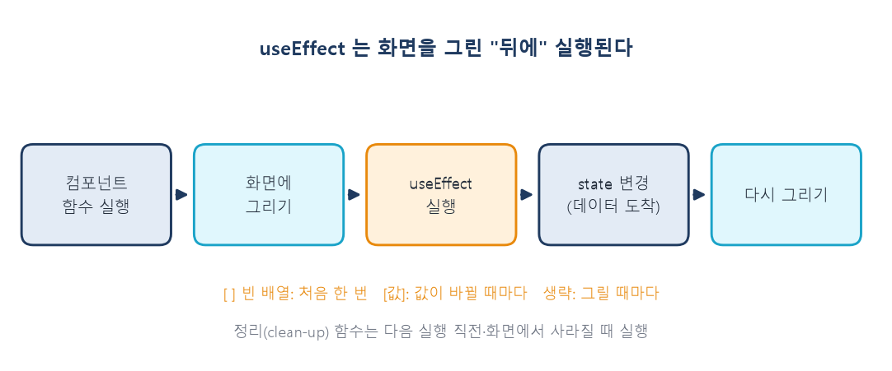
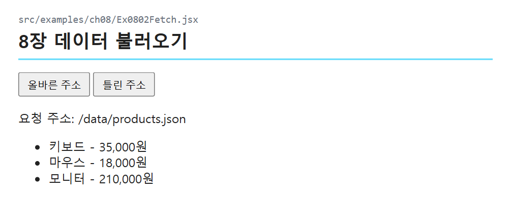
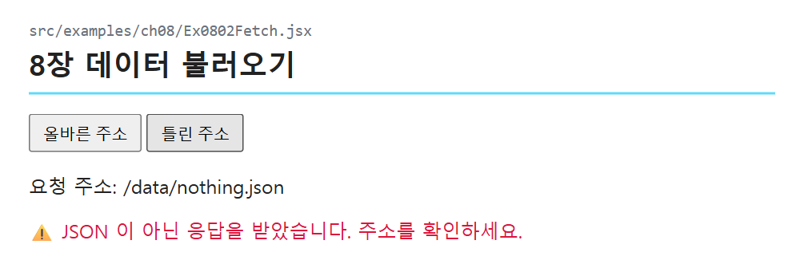

8장. useEffect 와 데이터 불러오기
학습 목표
useEffect가 "화면을 그린 뒤에" 실행된다는 것을 안다.- 의존성 배열(
[],[값], 생략)에 따라 언제 실행되는지 구분한다. fetch로 데이터를 받아 화면에 그리고, 로딩·오류 상태를 보여 준다.- 타이머처럼 정리(clean-up)가 필요한 일을 정리 함수로 끝낸다.
8-1. 부수 효과(side effect)와 useEffect
컴포넌트 함수가 하는 일은 원래 하나다. props·state 를 받아 JSX 를 돌려주는 것. 그런데 실제 앱에는 화면 그리기 말고도 할 일이 있다.
- 서버에 데이터 요청하기
- 브라우저 탭 제목 바꾸기
- 타이머 켜기·끄기
이런 일을 부수 효과라고 하고, useEffect 안에 넣는다. useEffect 는 화면을 다 그린 뒤에 실행된다.

useEffect(() => {
// 할 일
return () => {
// (선택) 정리할 일
};
}, [의존성 배열]);
| 의존성 배열 | 실행 시점 | 주로 쓰는 곳 |
|---|---|---|
[] (빈 배열) |
처음 화면에 나타났을 때 한 번 | 처음 데이터 불러오기 |
[id] |
처음 + id 가 바뀔 때마다 |
id 에 맞는 글 불러오기 |
| 생략 | 그릴 때마다 매번 | 거의 쓰지 않는다 |
8-2. 실행 시점 눈으로 보기
// Ex0801Effect.jsx - useEffect: 화면을 그린 "뒤에" 할 일
//
// 이 예제가 보여 주는 것
// useEffect(할 일, [의존성 배열])
// - 배열을 아예 안 쓰면 : 그릴 때마다 매번 실행
// - 빈 배열 [] : 처음 화면에 나타났을 때 한 번만 실행 (데이터 불러오기에 쓴다)
// - [count] 처럼 값을 쓰면 : 처음 + 그 값이 바뀔 때마다 실행
// - 할 일 안에서 함수를 return 하면 "정리(clean-up)" 함수. 사라지기 직전에 실행된다.
//
// 브라우저 개발자 도구(F12) → Console 탭에서 찍히는 순서를 확인하자.
// (개발 모드의 StrictMode 는 일부러 처음에 두 번 실행해 실수를 찾게 해 준다. 8장 본문 참고)
import { useEffect, useState } from "react";
function Ex0801Effect() {
const [count, setCount] = useState(0);
const [text, setText] = useState("");
// 1) 처음 한 번만
useEffect(() => {
console.log("① 처음 한 번: 화면에 나타났다");
return () => console.log("① 정리: 화면에서 사라진다");
}, []);
// 2) count 가 바뀔 때마다 → 브라우저 탭 제목을 바꾼다 (화면 밖의 일 = 부수 효과)
useEffect(() => {
console.log("② count 가 바뀜:", count);
document.title = `클릭 ${count}번`;
}, [count]);
// 3) 의존성 배열이 없으면 글자를 칠 때도, 버튼을 눌러도 매번 실행된다
useEffect(() => {
console.log("③ 그릴 때마다 실행");
});
return (
<div>
<button onClick={() => setCount(count + 1)}>클릭 {count}</button>
<p>
<input value={text} onChange={(e) => setText(e.target.value)} placeholder="글자를 쳐 보세요" />
</p>
<p>브라우저 탭 제목과 콘솔(F12)을 함께 보세요.</p>
</div>
);
}
export default Ex0801Effect;

예제를 열고 클릭 0 버튼을 한 번 누른 뒤 콘솔을 보면 이렇게 찍혀 있다. (실제로 실행해 모은 로그)
① 처음 한 번: 화면에 나타났다
② count 가 바뀜: 0
③ 그릴 때마다 실행
① 정리: 화면에서 사라진다
① 처음 한 번: 화면에 나타났다
② count 가 바뀜: 0
③ 그릴 때마다 실행
② count 가 바뀜: 1
③ 그릴 때마다 실행
- 처음 세 줄 → 정리 → 다시 세 줄: 개발 모드의 StrictMode 가 "화면에 붙였다 → 뗐다 → 다시 붙였다" 를 일부러 해 본 것이다. 정리 함수를 빠뜨린 실수를 찾게 해 주는 기능이며, 배포 빌드에서는 한 번만 실행된다.
- 버튼을 누르면
②와③만 실행된다.①은[]라서 다시 실행되지 않는다. - 입력 칸에 글자를 치면
③만 실행된다.count가 안 바뀌었으니②는 쉰다.
8-3. fetch 로 데이터 불러오기
서버에서 데이터를 받아 오는 코드는 거의 항상 이 모양이다.
- state 3개:
데이터,loading(기다리는 중?),error(실패 이유) useEffect(..., [])안에서fetch로 요청- 결과에 따라 state 를 바꾸고, 화면은 state 에 따라 세 가지로 나눠 그린다
이 예제는 public/data/products.json 파일을 서버 대신 쓴다. Vite 는 public 폴더의 파일을 그대로 내려주므로 /data/products.json 주소로 받을 수 있다.
[
{ "id": 101, "name": "키보드", "price": 35000 },
{ "id": 102, "name": "마우스", "price": 18000 },
{ "id": 103, "name": "모니터", "price": 210000 }
]
// Ex0802Fetch.jsx - useEffect + fetch 로 데이터 불러오기 (로딩·오류 처리 포함)
//
// 이 예제가 보여 주는 것
// - 화면에 처음 나타날 때([]) 데이터를 요청한다.
// - 데이터가 오기 전 / 온 뒤 / 실패했을 때를 state 3개로 나눠 보여 준다.
// loading : 기다리는 중인가? error : 실패했나? products : 받은 데이터
// - useEffect 에 넘기는 함수 자체는 async 로 만들 수 없다.
// 그래서 안쪽에 async 함수를 만들고 바로 부른다.
// 데이터는 public/data/products.json (Vite 가 /data/products.json 주소로 내려준다).
// 9장에서는 이 주소만 Spring Boot 서버 주소로 바뀐다.
import { useEffect, useState } from "react";
function Ex0802Fetch() {
const [products, setProducts] = useState([]); // 처음엔 빈 배열 (map 이 오류 나지 않게)
const [loading, setLoading] = useState(true);
const [error, setError] = useState(null);
const [url, setUrl] = useState("/data/products.json"); // 일부러 틀린 주소로 바꿔 오류도 보자
useEffect(() => {
async function load() {
setLoading(true);
setError(null);
try {
await new Promise((r) => setTimeout(r, 700)); // 느린 서버 흉내 (로딩 문구를 보려고)
const res = await fetch(url); // 요청 보내고 응답 기다리기
if (!res.ok) throw new Error(`요청 실패 (상태 코드 ${res.status})`); // 404, 500 등
// Vite 개발 서버는 없는 파일을 요청하면 404 대신 index.html(HTML, 상태 200)을 돌려준다.
// 그대로 res.json() 을 하면 "Unexpected token '<'" 오류가 나므로, JSON 인지 한 번 더 확인한다.
if (!res.headers.get("content-type")?.includes("application/json")) {
throw new Error("JSON 이 아닌 응답을 받았습니다. 주소를 확인하세요.");
}
const data = await res.json(); // 응답 본문(JSON 글자)을 객체로 바꾸기
setProducts(data);
} catch (err) {
setError(err.message);
setProducts([]);
} finally {
setLoading(false); // 성공이든 실패든 기다림은 끝
}
}
load();
}, [url]); // url 이 바뀌면 다시 불러온다
return (
<div>
<button onClick={() => setUrl("/data/products.json")}>올바른 주소</button>
<button onClick={() => setUrl("/data/nothing.json")}>틀린 주소</button>
<p>요청 주소: {url}</p>
{/* 세 가지 상태에 따라 다른 화면 */}
{loading && <p>⏳ 불러오는 중...</p>}
{error && <p style={{ color: "crimson" }}>⚠️ {error}</p>}
{!loading && !error && (
<ul>
{products.map((p) => (
<li key={p.id}>
{p.name} - {p.price.toLocaleString()}원
</li>
))}
</ul>
)}
</div>
);
}
export default Ex0802Fetch;


왜 404 가 아니라 "JSON 이 아닌 응답" 일까? Vite 개발 서버는 없는 주소를 요청받으면 404 대신 index.html(상태 200)을 돌려준다. 화면 주소(라우팅)를 위한 기능인데, fetch 입장에서는 "성공(200)했는데 내용이 HTML" 이 된다. 이 검사가 없으면
res.json()이Unexpected token '<', "<!doctype "... is not valid JSON오류를 낸다. 이 오류를 보면 주소가 틀려서 HTML 을 받았구나 하고 떠올리자. Spring Boot 같은 API 서버는 없는 글에 진짜 404 를 돌려주므로res.ok검사에서 걸린다(9장).
| 코드 | 뜻 |
|---|---|
await fetch(url) |
요청을 보내고 응답(Response) 이 올 때까지 기다린다 |
res.ok |
상태 코드가 200~299 면 true. 404·500 이면 false (fetch 는 이때 오류를 던지지 않으니 직접 검사!) |
res.headers.get("content-type") |
응답 내용의 종류. JSON 이면 application/json 이 들어 있다 |
await res.json() |
응답 본문(JSON 글자)을 자바스크립트 값으로 바꾼다 |
catch |
서버가 꺼져 있는 등 응답 자체를 못 받으면 여기로 온다 |
finally |
성공이든 실패든 마지막에 실행 → setLoading(false) |
useEffect 에 async 를 바로 붙이면 안 된다.
useEffect(async () => {...})처럼 쓰면 함수가 Promise 를 돌려주는데, React 는 useEffect 가 "정리 함수" 나 아무것도 돌려주지 않기를 기대한다. 그래서 안쪽에async function load()를 만들고 바로load()를 부른다.F12 → Network 탭을 열고 다시 불러오면
products.json요청과 상태 코드(200, 404)를 직접 볼 수 있다. 9장에서 서버와 통신할 때 가장 많이 보게 될 탭이다.
8-4. 정리(clean-up) 함수
// Ex0803Clock.jsx - 정리(clean-up) 함수가 필요한 경우: 타이머
//
// 이 예제가 보여 주는 것
// - setInterval 로 1초마다 시각을 바꾸는 시계
// - 컴포넌트가 사라질 때 clearInterval 로 타이머를 멈추지 않으면,
// 보이지 않는 곳에서 타이머가 계속 돌아 메모리와 CPU 를 낭비한다.
// - "시계 숨기기" 를 누르면 Clock 이 사라지면서 정리 함수가 실행된다(콘솔 확인).
import { useEffect, useState } from "react";
function Clock() {
const [now, setNow] = useState(new Date());
useEffect(() => {
const id = setInterval(() => setNow(new Date()), 1000); // 1초마다 새 시각
console.log("타이머 시작", id);
return () => {
clearInterval(id); // 정리: 타이머 멈춤
console.log("타이머 정리", id);
};
}, []);
return <h2>🕒 {now.toLocaleTimeString("ko-KR")}</h2>;
}
function Ex0803Clock() {
const [show, setShow] = useState(true);
return (
<div>
<button onClick={() => setShow(!show)}>{show ? "시계 숨기기" : "시계 보이기"}</button>
{show && <Clock />} {/* show 가 false 가 되면 Clock 이 화면에서 사라진다 */}
</div>
);
}
export default Ex0803Clock;
"시계 숨기기" 를 누르면 Clock 이 화면에서 사라지면서 정리 함수가 실행되어 타이머 정리 가 찍힌다. 정리 함수가 없으면 시계가 안 보여도 타이머가 1초마다 계속 setNow 를 부른다.
정리가 필요한 대표적인 일: setInterval/setTimeout, 이벤트 리스너(window.addEventListener), 웹소켓 연결.
정리
useEffect(할일, [의존성])은 화면을 그린 뒤 실행된다.[]처음 한 번,[값]값이 바뀔 때마다, 생략하면 매번.- 데이터 불러오기 = state 3개(데이터·loading·error) + useEffect + fetch + try/catch/finally.
fetch는 404·500 에서도 오류를 던지지 않는다 →res.ok를 검사한다. (Vite 개발 서버의 없는 파일은 index.html 로 오므로 content-type 도 확인)- 타이머 등은 return 하는 정리 함수로 끝낸다.
확인 문제
- 다음 세 useEffect 가 각각 언제 실행되는지 쓰시오.
useEffect(() => { console.log("A"); });
useEffect(() => { console.log("B"); }, []);
useEffect(() => { console.log("C"); }, [keyword]);
- Spring Boot 서버에 없는 글을 요청한
fetch("http://localhost:8080/api/posts/999")는 404 응답을 받는데도catch로 가지 않는다. 왜 그런지, 그리고 어떻게 실패로 처리하는지 쓰시오. public/data/notices.json에 공지 3개(id,title)를 만들고, 불러와서 목록으로 보여 주는NoticeList컴포넌트를 만드시오. 로딩 중에는 "불러오는 중..." 을 보여 주시오.- Ex0803Clock 의
return () => clearInterval(id)를 지우고 시계를 숨겼다 보였다 여러 번 해 보시오. 콘솔에 무슨 일이 생기는지 관찰하고 이유를 설명하시오.